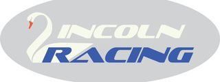
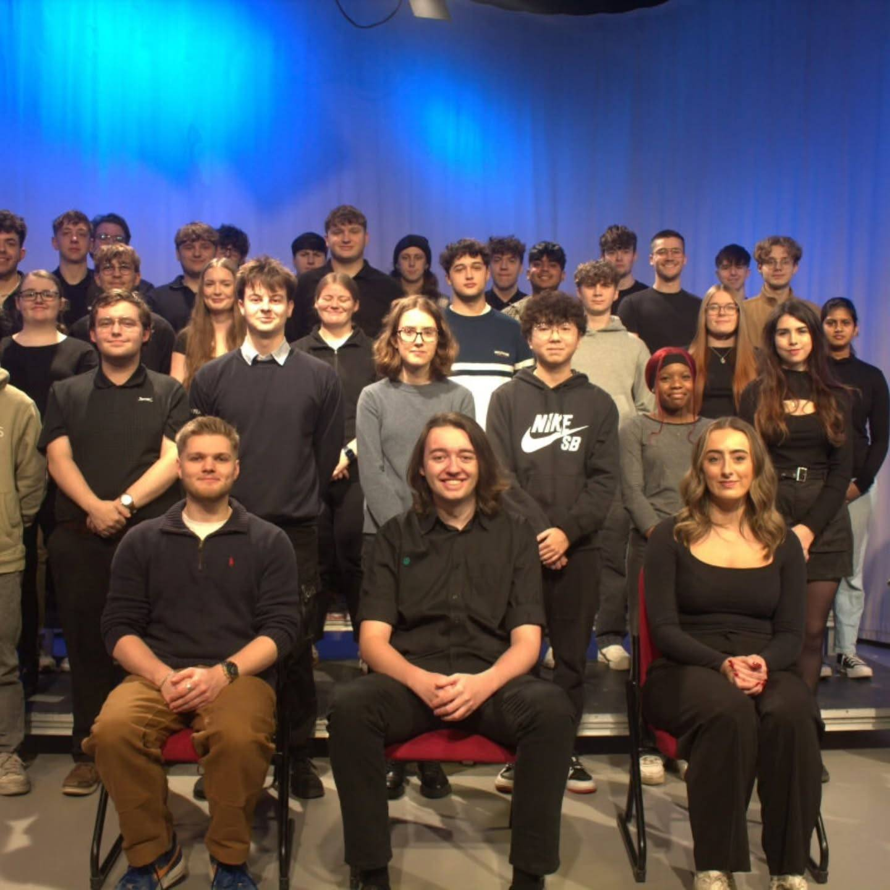

Formula Student: Brakes team
November 2025 - Present
During my time with Lincoln's Formula Student team, I was assigned to the brakes team, where I was responsible for researching different hydraulic braking systems and carrying out the calculations required for our specific system. I also researched and selected the components needed for the braking system and began modelling the design in CAD. This project has given me experience in hydraulic systems, engineering calculations, component selection and CAD design. This year, we aim to enter and showcase our car in the Concept Class competition.
See more